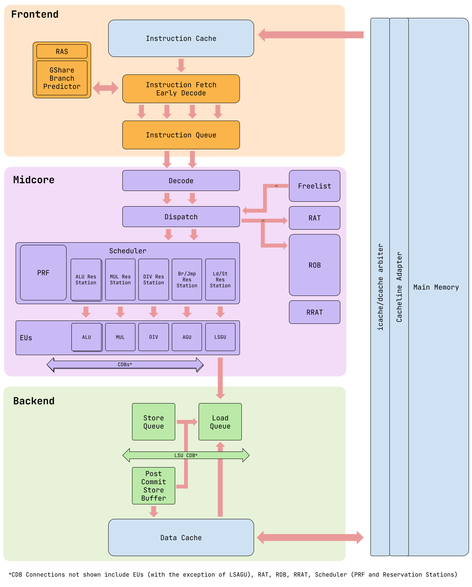

Superscalar Out-of-Order RISC-V Processor
This is IllOOM, my Out-of-Order processor that I designed and implemented with my team as part of UIUC's ECE 411. Some noteable features:
- 4-way frontend, 2-way dispatch/commit RV32IM processor using Explicit Register Renaming architecture
- Advanced features included a GShare branch predictor, pipelined L1 instruction cache, split LSQ with forwarding, writethrough post-commit store buffer, N-way superscalar frontend parameterizability, and more
- Synthesized core at 614 MHz on FreePDK’s 45nm process node, achieving an IPC of 1.587 on the compression benchmark
- Ranked 5th out of 34 teams in performance competition across 11 benchmarks
Report
Block Diagram
